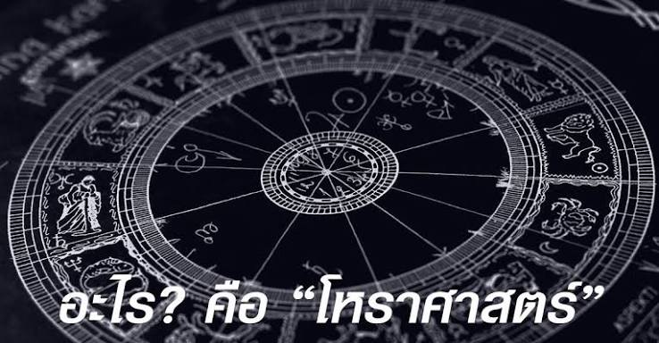

โหราศาสตร์

วิชาโบราณที่ศึกษาการเคลื่อนตัวของดวงดาวและเทหวัตถุบนท้องฟ้าเพื่อนำมาเชื่อมโยงกับปรากฏการณ์บนโลก พฤติกรรมมนุษย์ นิสัยใจคอ ดวงชะตา และแนวโน้มเหตุการณ์ต่างๆ ที่อาจเกิดขึ้นในชีวิต โดยอาศัยหลักการคำนวณวัน เดือน ปี เวลาเกิด และสถานที่เกิด มาจัดทำเป็นผังดวงชะตาหรือจักรราศี เพื่อวิเคราะห์อิทธิพลของดาวเคราะห์ดวงต่างๆ ที่มีต่อชีวิตมนุษย์ในแต่ละช่วงเวลา ส่วน การดูดวง คือกระบวนการนำเอาศาสตร์หรือวิชาการทำนายชนิดต่างๆ ซึ่งโหราศาสตร์ก็เป็นหนึ่งในนั้น มาใช้วิเคราะห์ประเมิน และคาดการณ์อนาคต เรื่องราว หรือคำถามที่ผู้มาดูดวงต้องการรู้ โดยนอกจากโหราศาสตร์แล้ว การดูดวงยังครอบคลุมไปถึงเครื่องมือทำนายรูปแบบอื่นด้วย เช่น การเปิดไพ่ยิปซี การดูลายมือ การดูศาสตร์แห่งตัวเลข หรือการทำนายตามตำราโบราณต่างๆ โดยมีวัตถุประสงค์หลักเพื่อช่วยให้ผู้ถูกทำนายได้เข้าใจตนเอง เห็นแนวโน้มอุปสรรคและโอกาสในชีวิต และนำข้อมูลมาใช้ในการวางแผนชีวิตอย่างมีสติและไม่ประมาท หรือศาสตร์ความเชื่อที่ศึกษาความสัมพันธ์ระหว่างตำแหน่งและการเคลื่อนที่ของดวงดาวบนท้องฟ้า กับเหตุการณ์ต่าง ๆ ที่เกิดขึ้นบนโลก รวมถึงชีวิต บุคลิกภาพ และโชคชะตาของมนุษย์